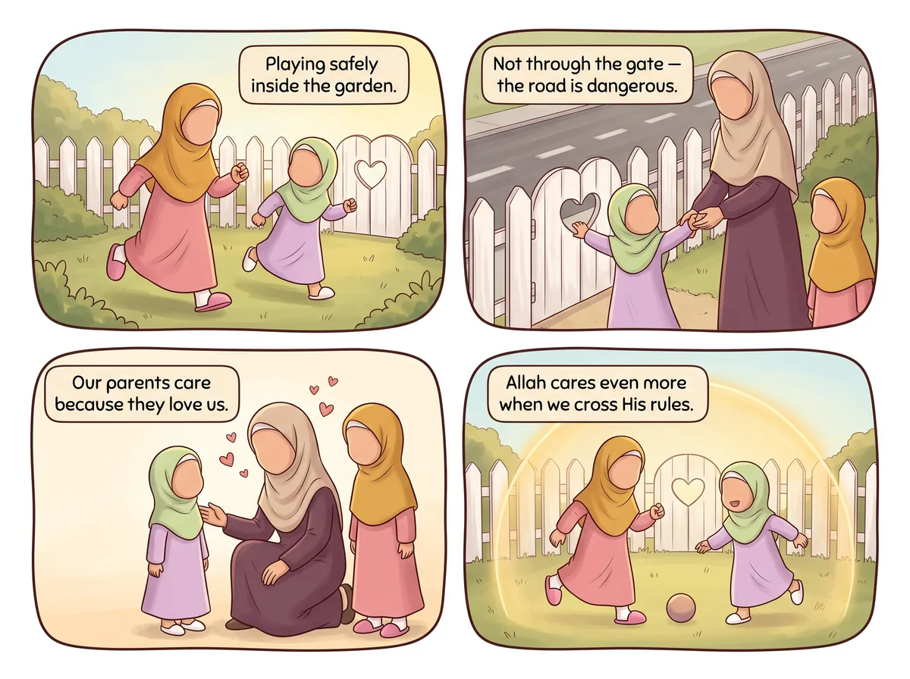

‹ সব হাদিস
আল্লাহর বারণ মেনে চলো

عَنْ أَبِي هُرَيْرَةَ، أَنَّ رَسُولَ اللَّهِ ﷺ قَالَ: إِنَّ اللَّهَ يَغَارُ وَغَيْرَةُ اللَّهِ أَنْ يَأْتِيَ الْمُؤْمِنُ مَا حَرَّمَ اللَّهُ
আমার সাথে বলো: ইন্নাল্লাহা ইয়াগারু, ওয়া গাইরাতুল্লাহি আন ইয়া'তিয়াল মু'মিনু মা হাররামাল্লাহ।
“নিশ্চয়ই আল্লাহর গায়রত (আত্মমর্যাদাবোধ) আছে; আর আল্লাহর গায়রত তখনই জাগে, যখন কোনো মুমিন আল্লাহর হারাম করা কাজ করে।”
বর্ণনায়: আবু হুরায়রা (রাঃ) · বুখারী ও মুসলিম
এর মানে আমার জন্য কী?
তুমি বিপদের কিছু করতে গেলে আম্মু-আব্বু বারণ করেন, কারণ তাঁরা তোমাকে ভালোবাসেন। আল্লাহ আমাদের তার চেয়েও বেশি ভালোবাসেন—তাই কোনো মুমিন যখন আল্লাহর বারণ করা (হারাম) কাজ করে, আল্লাহ অসন্তুষ্ট হন। আল্লাহর নিয়মগুলো আমাদের ভালোর জন্যই, তাই আমরা ভালোবেসে সেগুলো মেনে চলি।🔤 ৬টি শব্দ
শুনতে কার্ডে চাপ দাও
🔊
إِنَّ اللَّهَ
নিশ্চয়ই আল্লাহ
🔊
يَغَارُ
গায়রত রাখেন (আত্মমর্যাদাবোধ)
🔊
وَغَيْرَةُ اللَّهِ
আর আল্লাহর গায়রত হলো
🔊
أَنْ يَأْتِيَ
যে করে
🔊
الْمُؤْمِنُ
মুমিন
🔊
مَا حَرَّمَ اللَّهُ
যা আল্লাহ হারাম করেছেন
⭐ চলো করে দেখি!
আল্লাহ আমাদের যা করতে নিষেধ করেছেন এমন একটি কাজ বলো, আর যা করলে তিনি খুশি হন এমন একটি কাজ বলো।